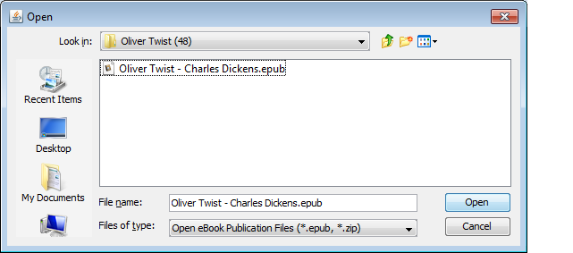
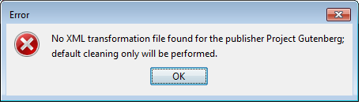
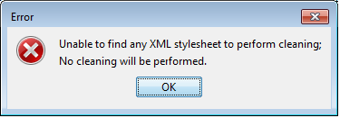

A basic understanding of HTML, XML, XHTML and CSS would be helpful in order to understand this document. Wikipedia is a great place to learn more about these technologies.
The ePub file format had its genesis in 1999 with the publication of the Open eBook Publication Structure 1.0 (OEBPS) by the Open eBook Forum, a consortium of individuals representing publishers, reading system vendors, software developers and experts in relevant web standards. A maintenance release of the specification was released in July of 2001 to clarify some parts of the original specification, but without substantive changes.
Over-simplifying, OEB defined a collection of files that together would comprise an e-book, together with a newly invented OEB package file which specifies the OEB documents, images, and other files that make up the OEB publication and how they relate to each other. According to the specification:
"A publication conforming to this specification must include exactly one OEB package file, which specifies the OEB documents, images, and other objects that make up the OEB publication and how they relate to each other.
It is recommended that all package files use extension ".opf", in order to make them readily identifiable within the group of files making up a publication."
Note that the acronym "OPF" originally signified "OEB Package File", and not "Open Packaging Format" as the International Digital Publishers Forum (IDPF) subsequently rebranded it.
The Open eBook Forum envisioned that the primary file format in an OEBPS publication would be HTML (at the time, HTML 4 was the most current version of HTML). The decision by the Open eBook Forum to make HTML the exclusive document format of the OEBPS was an excellent one, for a number of reasons. (Other types of files could be included in the publication structure, but only to support the HTML content files.)
In the first place, HTML was, and still is, the most open document format around. It is a plain text format, which means that HTML can be edited and viewed by the most simple of editors. The markup is comprised of elements surrounded by angle braces (<>); character entities are provided if a literal angle brace needs to be represented (< and >). It is relatively easy to understand and master (at least as compared to other document formats) and there is a lot of free and open-source software (FOSS) available to manipulate and display HTML files.
Secondly, HTML is a semantic language not a presentational one. This means that the marked-up text is defined by what it is, not by how it looks. Examples of semantic mark-up in HTML include the paragraph (<p>) the list, ordered and unordered (<ol> and <ul>), header and footer groups (<header> and <footer>) as well as header lines at various levels of significance (<h1>...<h6>). A table (<table>) is a document structure containing rows (<tr>) and columns (<td>). There are over 100 semantic elements in HTML.
The greatest advantage to semantic mark-up, in my opinion, is that it makes a document highly adaptable to the user agent displaying it, and to the reader reading it. ("User agent" is the technical term for software that displays a document for an end user.) According to Oxford languages, a paragraph is "a distinct section of a piece of writing, usually dealing with a single theme and indicated by a new line, indentation, or numbering." If a section of text is marked as a <p>aragraph, the user agent displaying it can choose whether to display it as an indented section, a block section (unindented but separated from other paragraphs by a blank line), a numbered section, or even a section beginning with a paragraph character (¶). Usually the default presentation of a semantic element can be set by the end user running the user agent.
The adaptability is important because an eBook is intended to be read on a wide variety of devices, from cell phones to desktop web browsers, and what is desirable presentation on one device may not be desirable on another. Take, for example, line justification. Justified lines (where every line begins and ends at the same margin on the screen) can give a highly professional look on a wide screen, but on a narrow screen (such as a cell phone) they can look quite odd as individual words are padded with a lot of white space to make the lines even. In this case, "ragged-right" text can be both more pleasing and more user-friendly.
The adaptablity of HTML allows one to create documents that are "reflowable", that is one where line length changes depending on the width of the screen. Anyone who has tried to read a PDF file on a cell phone understands just how annoying it can be to be required to scroll the text from side to side to read a document. Because HTML is adaptive, a user agent can decide which segments of text are appropriate to reflow (e.g paragraphs) and which are not (e.g. tables).
One of the major shortcomings of the OEBPS was that it did not propose any sort of single file publication structure, explicitly stating that "This specification does not define means for physically bundling files together to make one data transfer object (such as using zip or tar)."
In 2004 I approached Jon Noring, one of the original participants in the Open eBook Forum with an idea for an OEBPS container based on the ZIP file format. My idea was a fairly simple one similar to that used by the Java Archive (JAR) format: as well as including all the OEBPS files in a ZIP archive, it would also include a required META-INF folder containing a single file which must be named "container.xml" and which would point to the ".opf" file which defined the rest of the publication.
The purpose of the "container.xml" file stored in a known location was to morph the container file from a "data transfer object" into a single file that could be used by ebook reading software to reconstruct the publication as a whole. To promote this new format, and to develop a prototype ebook reading system, Jon and I, together with a few like-minded individuals formed the Open Reader Consortium, created a couple of Yahoo discussion groups, and sent invitations to the nascent ebook community to join us.
Unfortunately, the Open Reader Consortium never gained much traction and has since been placed in "cold storage." It did, however, have a significant impact on the later development of the "ePub" format. The IDPF's specification for the "Open Container Format" (the development of which I participated in as an "Invited Expert") is, in practice, virtually identical to the format I originally proposed to Jon Noring.
In January of 2017 the IDPF was merged into the W3C, and itself went into "cold storage."
In 2011 I started work on this project, ePubEditor, a Java‑based project which was designed to edit ePub files in their native form, and which used Java Swing for its user-interface code. The source code was originally hosted at SourceForge, and more recently revived and copied to GitHub. It is my intention moving forward to upgrade the project to JavaFX and add whatever additional functionality may be required to support the newest version of ePub (currently 3.2).
I have two target audiences for ePubEditor: people who have created an e-book in HTML format (or a format easily converted to HTML), and now want a quick and easy way to turn it into an ePub; and people who have ePubs that do not display well on their devices because of "over-styling" by publishers and who want to clean up those ePubs for their own purposes.
ePubEditor is designed to be a fairly literal interpretation of the OEB Package File (.opf) which is a required part of every ePub. The package file is an XML file that contains sections to describe various parts of an ebook. The <manifest> section of the file contains a list of all the files that make up the publication, not only XHTML content, but referenced images, CSS style sheets, font files, and anything else required to make a complete publication.
The <spine> section of the package file contains references to items in the <manifest> which form the primary reading order of the publication. It does not contain references to all of the items in the manifest, only to those which are designed to be presented directly to the reader. These spine items can be thought of as the "chapters" of the publication. Order is important here ; when an ePub is opened, the content files will be presented to the human reader in exactly the same order as they appear in this section.
The <metadata> section contains details about the publication but which are not part of publication itself, such as the names of the author and contributors, the title of the publication, the publisher identity, ISBN numbers and other identifiers. The <metadata> section was originally intended to contain only metadata defined by the Dublin Core Metadata Initiative but it has since been expanded to include any arbitrary metadata via the use of the <meta> tag.
Lastly, the package file contains a <guide> section. This section is designed to provide references to various significant parts of the publication such as the cover image, the table of contents, and the start of the actual content. This section is intended to be used by reading system software, not the human reader, but I'm not aware of any software (other than perhaps Adobe Digital Editions) which takes advantage of this data.
When you start the program ePubEditor's opening screen will have 5 tabs, roughly corresponding to the publication sections of the .opf file. At this point, the current tab will be the Manifest table.
Before attempting to edit any ePub file, you may want to set up your tool preferences. At the bottom of the Manifest tab there are 5 buttons, one of which is the "Edit" button. When you select a file on the Manifest tab and press the "Edit" button it will launch an editor to allow you to edit the file.
The selection of an HTML editor is a very personal one. So how does ePubEditor know what your preferred editors are? The answer is that you tell it. When you select the Tools‑>Editors from the menu bar, you will be presented with a dialog box that lists media-types and the executables that are used to edit them.

To add an editor to this list you must know where on your computer the executable file resides. This can sometimes be challenging on Windows platforms because Microsoft makes a concerted effort to hide this information from you. If you don't know where an executable file is found on Windows, find the shortcut you use to launch the application. Right‑click on the icon or the program listing in the start menu and select "properties". The "Target" value will be the location of the executable. If you are a Mac user I can't tell you how to find the location of the executable. If someone could help me out I would appreciate it. If you're a Linux user, you already know how to find an executable's location.
In the Tools‑>Editors dialog, press the "Add" button. Yet another dialog box will open where you can select a media-type that this editor will handle. Press the "Browse" button and a file system browser will open that will let you navigate to the executable's location in the file system. Select the executable in the browser dialog, and press "Select". The path to the executable will be set in "Add" dialog. Lastly, edit the command line options, if necessary. "%s" will be replaced with the name of the file to be edited; usually this is sufficient but if more command-line options are required you can set them here.
There is a special media-type of "other" included in the media-type drop-down editor. This is in fact not an acknowledged media-type at all, but indicates a "catch-all" editor that will be launched if no other editor has been set up for a particular file type. If there is no catch-all editor set up, ePubEditor will attempt to launch C:\Program Files\Windows NT\Accessories\wordpad.exe. In all likelihood Wordpad will not exist on your system, so it behooves you to select a default editor when the program is first run.
On my system I have set Microsoft's Visual Studio Community Edition with the HTML11 extension as my editor for XHTML, IntelliJ IDEA as my editor for HTML, and TextPad 5 as my editor for CSS files. These assignments are not exclusive; you may use a single application as an editor for all media types, although an entry needs to be added for each media-type you wish to edit. On the other hand, you cannot select multiple editors for a single media-time; if you attempt to do so the previous editor selected for that media-type will be overwritten. Older versions of Microsoft Word can work as an HTML editor if you are careful to only use semantic styles when editing your files. Avoid Adobe InDesign and most other WYSIWYG editors as they tend to focus on presentation and not semantics.
Editors are not limited to text files like HTML or CSS. On my system I have set up GIMP as my image editor but any image editor that accepts a command-line file name could work. I have used IrfanView in the past and it worked well. Microsoft Paint is an acceptable alternative. If you have the money you could even use Photoshop or PaintShop Pro.
While you are setting up your editing tools you should also set up other preferences. Tools‑>Preferences allows you to set local paths for your temporary files folder, and your xsl file folder. The purpose of the xsl file folder will be explained later when we discuss editing existing ePub files. Here you can also specify the default CSS file that will automatically be added to all new ePub publications.
Editor and path preferences are stored using the Java Preferences class. The backing store for this class is operating system dependent, which means the actual mechanism may differ based on the Operating System ePubEditor is running on. On Windows preferences are stored in the System Registry, whereas on Linux preferences are stored in a file in the user's home directory. The upshot of this decision is that the preferences will have to be set for every machine that ePubEditor runs on.
When you select File‑>New, ePubEditor will start a new publication in the working directory/folder you select.
The "Manifest" table will show a list of all the files that will be included in the publication. When you start a new ePub, you should see three files in the Manifest table: ebook.css, toc.html, and cover.jpg. "toc.html" and "cover.jpg" should be marked with a red "stop" symbol, indicating that while they are listed in the the manifest they do not exist on the file system. You can remove them from the manifest, or better yet you can create them. Once the files exist (and the window is refreshed) the red "stop" will turn to a green "check."

On this screen there is an "Add" button. When you press this button, a file system browser will appear and allow you to add one or more files to the publication. When a file is added to the publication it is copied to the publication's working folder.
When you add a file to the publication, ePubEditor attempts to "intuit" its media-type based on the file extension. It will then present a dialog box asking if you want to add the file to the content list. If you say yes, the file will be flagged as being part of the content, a reference to it will be added to the "Content" table, and it will eventually become part of the ePub's <spine>. If the media-type is not correct, you should change it to match its actual media-type. Only certain media-types are allowed in ePubs, and the "media-type" field contains a drop-down selector containing only those media types. If the HTML file is XML‑compliant (ie, XHTML) it should have a media-type of "application/xhtml+xml"; otherwise, it probably has a media-type of "text/html". Typically, only (X)HTML files should be added to the content list.
The last column on the Manifest table is used to assign properties to a manifested item. With few exceptions, a property assignment is optional; no property needs to be assigned to any file. According to the EPUB 3 Package specification, allowable properties are:
According to the specification, there must be one, and only one, item in the Manifest that has the "nav" property. This file will be the Table of Contents for the publication, and contains both human-readable and machine-readable contents. Presumably a Table of Contents file can be omitted from a publication, but if so the publication does not comply with the specification. A better option would be to include a "nav" item, but mark all the sections in it as "hidden."
One or more of these properties must be assigned if the manifested document meets the criteria in the specification. A manifested item may match more than one requirement (e.g. the "cover-image" exists outside of the package ("remote-resources")), in which case all applicable properties are used, separated by commas. ePubEditor only supports one property per item, so if a manifested item needs multiple properties the .opf file must be edited by hand before the ePub is compiled.
If a manifested file is deleted from the file system the Manifest entry will remain, but the file indicator icon will change to the red "stop" symbol when the screen is refreshed.
If No file is selected (highlighted) in the Manifest table, the remaining four buttons (Remove, Edit, Split HTML and Transform) are disabled.
The "Remove" button allows you to remove a file from the publication. When a file is removed from the publication it is also removed from the Content table if it was part of the content, but it is not removed from the file system. The file will not be part of the compiled ePub, but it will remain in the working folder in the file system for future reference.
When a manifested file is selected and the "Edit" button is pressed, ePubEditor attempts to launch the editor associated with the declared media-type. (see the preferences setup discussion earlier in this document.)
It is possible that you will be creating an ePub from an existing single large HTML file. In this case you may want to split the one large file into smaller files for better maintenance, such as one file per chapter. ePubEditor allows you to split up an HTML file into multiple files by specifying an HTML element which is the split point.
As an example, the Project Gutenberg version of A Tale of Two Cities, by Charles Dickens has each chapter sectioned into a <div class="chapter"> element. Suppose you add the PG file to a new ePub and set the media-type correctly. When you select the file and press the "Split" button you will be presented with a dialog box that will ask for the HTML element which will be the split point.

When you press the "Split" button the original file will be split immediately before the selected element and you will end up with 49 new HTML files numbered consecutively. If the original file was part of the Content table, each of the new files will be added to the Content table as well. Each new file will have the same <head> section (and thus all the same style and meta data) but the body will contain only the text following and including the split point element and up to the next occurrence of the split point element. The new files will be assigned the same media-type as the original file. The original file will be removed from the Manifest, but it will not be deleted from the file system.
The function of the "Transform" button will be discussed later in the section on editing existing ePubs.
The Manifest shows all files that will be included in the ePub container, but only files listed in the "Content" will be presented directly to the reader. Order is unimportant in the Manifest table, but items in the Content table will be presented by the reading system in the order they are listed in the Content table. Therefore, on the Content tab in addition to the "Add" and "Remove" buttons, there are buttons to move file references up and down.

Pressing the "Add" button will add a reference to the Content table of the first content file (HTML, XHTML) in the Manifest table which is not yet already in the Content table. Future enhancements will include the ability to explicitly select one or more candidate files. The "Remove" button will remove the selected file from the Content table, but it will not remove it from the Manifest table. The "Move Up" and "Move Down" buttons will move the selected file reference up or down in the Content list.
Metadata about the book can be entered or edited on the "Authors and Contributors" tab, or on the "Properties" tab. Even though this metadata is stored in a single <metadata> section of the OEB Package File, data about authors and contributors is separate from other properties in ePubEditor. This is because these two sets of metadata have different attributes. Contributors have roles, and a File As attribute (usually a contributor's name is entered as it would be displayed, and the "File As" property is last name first. It is possible that the author's name may be a pseudonym whereas the "File As" attribute may be the author's given name). The contributor's role is selected from a drop-down list of allowed roles. If a contributor's role is not in the drop-down list "other" should be selected.
As to other properties, every ePub must have at least one identifier which is globally unique, a title, and a language attribute. These additional properties are show on the "Properties" tab. When a new ePub is created these properties are populated with default values. The "title" property is set to "Title of this work", the identifier is set to a random UUID value, and the language is set to "en". These property values should be changed to values which are meaningful to your publication. For example, the identifier value may be changed to the ISBN of the publication (if it is known) in which case the identifier's "Other Attribute" should be changed to 'opf:scheme="ISBN"'. Other identifier schemes are "DOI" for Digital Object Identifiers and "JDCN" for Japan Digital Comic Number. If the identifier does not represent one of these types the "opf:scheme" attribute should be omitted.
The Properties table will also show an entry for the ePub's working directory (aka "epubeditor:rootPath") which is shown only for information purposes; it will not be included in the ePub file when compiled.
The "Guides" table may contain references to various significant parts of the publication such as the cover image, the table of contents, any indexes and the start of the actual content. The actual <guide> section of the .opf file has been deprecated in ePub version 3.3 in favor of an XHTML document utilizing the new HTML5 <nav> element. ePubEditor does not yet support creation or maintenance of the new ePub Navigation Document; users should continue to use the Guides table until such time as support has been added.
While there are no <guide> entries required by the specification in ePub documents, ePubEditor uses the "cover" entry to discover any image that will become part of an HTML cover wrapper file, and the "toc" entry to identify the table of contents file name that will be used when generating a new Table of Contents. These entries must be present before attempting to automatically generate either of these files.
Virtually every ePub should have a Table of Contents (TOC), which is why ePubEditor adds a "toc.html" Manifest entry to every new publication. If your publication already has a Table of Contents (which should exist in its own file) you can select the existing TOC by removing the auto-generated "toc.html" file entry from the Manifest table, then selecting your own TOC file and changing the "id" value to "_toc".
In cases where you do not already have a Table of Contents, selecting "Edit‑>Build TOC" from the main menu (or pressing Ctrl‑T) will cause ePubEditor to generate an XHTML formatted Table of Contents for the publication as a whole using ordered lists (<ol>). Each header becomes a list item, and each time a header level changes a new, embedded unordered list is started. When the entire list is successfully created, it is saved as an XHTML file and added to the manifest.
For example, if your publication files use <h2> for "Part" headings and <h3> for chapter headings, ePubEditor will create a TOC similar to the following:
<ol class="toc">
<li>Part One
<ol style="list-style:none">
<li>Chapter I<li>
<li>Chapter II<li>
<li>Chapter III<li>
</ol>
</li>
<li>Part Two
<ol style="list-style:none">
<li>Chapter IV<li>
<li>Chapter V<li>
<li>Chapter VI<li>
</ol>
</li>
etc.
When the IDPF was developing the specification for ePub 2.0, certain businesses interests advocated forcefully for the required inclusion of an NCX file (Navigation Control file for XML) in every compliant ePub. The file, the format of which was developed for Digital Talking Book (DTB), contains a hierarchical table of contents for the EPUB file. As an XML file it was not designed for display to a reader, but required a reading system to parse the file and render the information in some proprietary manner.
A description of the format of the NCX file is beyond the scope of this document.
While the 2.0 specification required every ePub to contain an NCX file, it only suggested that reading system software should support it. To my knowledge, very few reading systems did. Once the IDPF was merged into the W3C, the NCX file was deprecated and ePubs are no longer required to include one.
In any event, should you desire to add an NCX file to your publication, ePubEditor provides an automated function to create an NCX file, similar to the behavior of the auto-generated Table of Contents. An NCX file is generated by selecting Edit‑>Build NCX from the main menu. Refinement of the generated NCX file is left as an exercise for the reader.
When a new publication is started in ePubEditor it automatically creates an entry in the Manifest table for a cover image, with the file name "cover.jpg". The entry is marked with the red "stop" icon to indicate that while the file is manifested, it does not exist in the file system. Before an ePub can be compiled the cover image must be provided, or the Manifest entry must be removed.
Only HTML files are presented to the user, so even if a cover image is present, it cannot be shown directly. Instead, it must be wrapped as an <img> element in an HTML file. A wrapper file can be created by selecting Edit‑>Build Cover from the main menu.
To create a cover wrapper file ePubEditor scans the "Guide" table for an entry of type "cover". If the "cover" entry does not exist in the Guide, or if the specified image file does not exist on the file system, an error message will be displayed. Otherwise a new HTML file will be created with a name that is the same as the .opf file name plus "_cover" (if the publication has not yet been saved, the new cover file name will be simply "_cover.html"). The cover image will be embedded in an <img> element with a style attribute of "max-width: 99vw; max-height: 99vh". "vh" and "vw" are percentage values of the "viewport" which means that the cover image will always fit on the reading system's screen without have to scroll up to down or right to left.
Once your publication is internally consistent you may compile it to an ePub. However, you may want to save the publication structure while it is still being manipulated. This is accomplished by selecting File‑>Save or File‑>Save As from the main menu. These operations take the information from ePubEditor, create an appropriate .opf file, and save it to your working folder. "Save" stores the file with the same .opf file name you specified when you created the new publication, whereas "Save As" allows you to rename the .opf file. You may now exit ePubEditor and no information will be lost. Remember the old adage: "Save early and save often."
Selecting File‑>Open will allow you to open an OEB publication structure from the file system by opening its corresponding .opf file.
As mentioned earlier, semantic HTML has huge advantages as ePub content documents. Examination of ePub files from commercial publishers, however, demonstrates conclusively that when it comes to HTML, commercial publishers are almost totally clueless.
HTML 4 was intended to be a mostly semantic markup language, and its successor, HTML 5 is even more so, with the addition of new semantic elements, such as <figure>, <abbr>, <address>, <details> and <data>. The styling of these semantic elements was designed to be accomplished by reference to an external style sheet, usually known as "Cascading Style Sheets", or CSS.
For a good example of how various style sheets can affect (and effect) the display of a document, visit CSS Zen Garden. The interesting thing about the CSS Zen Garden is that every view is exactly the same document; only the style sheet changes!
By changing a style sheet an end-user can cause a user agent to present an HTML document in a way that is most satisfying to that user. As a simple example, a paragraph is almost universally defined as "a collection of one or more complete sentences, usually dealing with a single theme and indicated by a new line, indentation, or numbering." While most printed works use a seriffed font to present a paragraph, in most cases on a computer screen a sans-serifed font is more user-friendly. And while justified lines are often preferred on relative wide computer screens, line justification is quite ugly on narrow screens such as a cell phone, tablet or PDA. Lastly, <p>aragraphs on browsers are almost always rendered as blocks, separated by a blank line, whereas in most printed material a paragraph is indicated by an indentation. Which of these alternatives is preferable is largely a matter of taste.
There are two tags in HTML that are intentionally free from semantics: <div> and <span>. The <div> tag is intended to hold a number of other elements and by default is rendered as a block of text (text that begins on a new line and causes a new line to begin afterwards). The idea behind these elements is that additional semantics can be added to a document by adding a "class" attribute to one of these elements that indicates the new semantics. The <span> tag is intended to mark a snippet of text within other tags.
An example of appropriate use of a <div> tag might be to hold a glossary, a set of footnotes, or a poem e.g. <div class="glossary">. An example of an appropriate use of a <span> tag might be to mark a snippet of text as a foreign language, e.g. <span class="foreign" lang="fr">sous vide</span>. The spanned text may need to be displayed differently, such as in an alternate font, or could be used by a spell checker to check the spelling of foreign words.
An unfortunate side-effect of relying on CSS for styling is that it is possible to use these generic elements to assign styles to a segment of text without adding any new semantics. For example, <div style="text-indent:2em"> could create an indented block of text that looks just like a paragraph, but may or may not be one. <span style="font-family:'Times New Roman'"> could cause a snipped of text to be rendered in a different font without any indication of of why that snippet is distinguishable from the surrounding text. If a user has selected 'Times New Roman' as his/her default font the snippet will not be distinguishable from the surrounding text even if it needs to be.
Even more unfortunate is that there is no way to prevent semantic elements from being used as generic elements; the number one culprit here is the <p>aragraph element. It is virtually impossible for a computer program to intuit the semantics of a section of text based on its presentation. If you were to select "View Page Source" in your browser you would see that this paragraph is inside <p> tags. But if you were instead to use <div class="para"> a computer couldn't distinguish between the two. Likewise, the computer couldn't tell the difference between <h1>ePubEditor User Documentation</h1>, which is the top-level header of this document, and <p style="...">ePubEditor User Documentation</p>, where the style attribute mimics the style of the header element.
I think it fairly obvious that a Table of Contents is semantically a list, the items of which may contain other lists. The W3C certainly thinks so as it mandates a human-readable Table of Contents in ePub 3.0 using lists. According to the specification, "The ol child of the nav element represents the primary level of content navigation. Each list item of the ordered list represents a heading, structure or other item of interest."
A sample Table of Contents satisfying the ePub specification might be:
<nav class="toc">
<h2>CONTENTS</h2>
<ol>
<li>PROLOGUE</li>
<li>PART I
<ol>
<li>ONE</li>
<li>TWO</li>
</ol></li>
</ol>
etc...
Which would be rendered as follows:
etc...
On the other hand, consider the following snippet from a Table of Contents file from a recent publication by Tom Doherty Associates:
<p class="contentsHead" style="text-indent: 0%;">
CONTENTS
</p>
<p class="toc1" style="text-indent: 0em;">
PROLOGUE
</p>
<p class="toc" style="text-indent: 0em;">
PART I
</p>
<p class="toc" style="text-indent: 1em;">
ONE
</p>
<p class="toc" style="text-indent: 1em;">
TWO
</p>
etc...
Presumably, with the correct style sheet, the TOR Table of Contents would look exactly like the W3C-compliant Table of Contents. But only a human could make the connection. I am not convinced that "CONTENTS" is a complete sentence and appropriately labeled a paragraph (indeed, I am fairly certain it is not). This second example from TOR has lost all adaptability; without the availability of a very specific style sheet a user-agent could simply not present the TOC correctly, and even with that style sheet it may not be presented in the best way for a specific platform. And if I am writing a program to find all the headers in a document, text in a <p> element is not going to be a candidate even if it has a class name of "contentsHead".
This last observation is not speculative. The very method ePubEditor uses to build a TOC is to scan each file referenced in the Content table in reading order and add each header value found (and a link to its location in the publication) into hierarchical, ordered lists. Any user agent will be able to present an acceptable version of the Table of Contents even without any special style specification.
The lesson for e-book designers is: use only semantic markup in your content documents, and don't add styling unless it is absolutely necessary; when absolutely necessary, use the minimum styling required. The W3C ePub Working Group recognized the importance of user control of presentation when it stated in the specification that "users SHOULD be able to override Author style sheets as desired." It went on to note that "Developers of Reading Systems are strongly encouraged to publicly document their user agent style sheets and how they interact with Author style sheets."
Of course, publishers should also document their Author style sheets, and be consistent in the usage, in order to make it easier for users to override those styles.
When it comes to inflexible, unadaptable typography, there is virtually nothing as non-adaptive as pigment on wood pulp. I suspect that much of the failure of commercial publishers to understand HTML is the fact that they have lived for centuries in the world of ink and paper. The notion that a publication can dynamically alter its presentation based upon the reader's preferences is utterly incomprehensible to them.
Because computers cannot derive semantic meaning from text presentation, just about no WYSIWYG (What You See Is What You Get) HTML editor can produce a semantic HTML file without significant human oversight. The human being using the editor must be able to recognize that a header, or the caption on an image, are not paragraphs and must be identified accordingly when the file is generated. And because most human typesetters are steeped in the world of ink and paper they are unlikely to provide the required oversight. Add this to the fact that most WYSIWYG editors use the <p> tag as a generic (non-semantic) element what you have is a recipe not for disaster, but certainly for failure.
As a result of this state of affairs, I don't believe I have ever seen a commercially produced ePub that can comfortably be read on my preferred reading system (an Android phone with the Cool Reader app) without extensive "cleaning." Thus, the second goal I had for ePubEditor was to create an application that can clean the kind of over-styled, generic markup common in commercial publications.
An existing ePub can be opened in ePubEditor by selecting "File‑>Import from ePub" on the main menu. When you elect to import an ePub a file system browser will open allowing you to select an existing ePub on your file system.
As noted above, an ePub file is just a specialized version of a zip file; when you press the "Open" button ePubEditor will create a new folder in your working folder which will have the same name as the ePub file but with a ".d" extension, and will extract all the files from the ePub into the newly created temporary folder. So, if you were to open "Oliver Twist - Charles Dickens.epub" all the publication's files would be extracted into a folder named "Oliver Twist - Charles Dickens.epub.d". ePubEditor then opens the container.xml file from the META-INF directory, reads the "rootfile" entry to determine the name of the .opf file, opens that file to load the publication structure, then remembers that the publication's working folder is the newly created temporary folder.
Once an ePub file has been imported, every file that makes up the publication can be edited. Simply select a file in the Manifest table and press the "Edit" button. ePubEditor will launch the editor you have set up for that media-type in the Tools‑>Editors menu. If there is no editor set up for the file you have selected, ePubEditor will launch the editor you have specified for "other" media types.
It can be tedious to clean every file in a publication by hand, particularly as commercial publishers have so thoroughly abused the HTML markup language. ePubEditor provides three automated means to clean up an ePub publication.
In addition to the creation of navigation files (Tables of Contents, Cover image wrappers) the "Edit" menu item also has functions labeled "Clean", "Replace" and "Insert". Unfortunately, each of these functions requires a certain amount of technical savvy.
The most technical, but also the most powerful, of these functions is "Clean". "Clean" uses XSL Transformations (XSLT) to automatically modify the contents of the publication files.
An XSLT style sheet (not to be confused with a CSS style sheet) provides templates to transform an XML document, including XHTML documents which are HTML coded as conformant XML. A simple XSLT template might look like this:
<xsl:template match="html:p[@class='para']">
<p>
<xsl:apply-templates />
</p>
</xsl:template>
This template finds HTML <p class="para"> tags and replaces them with simple <p> tags. (The only reason you would need to identify a <p> tag as a "para" is if you're abusing the <p> tag elsewhere for other, non-paragraph purposes).
A discussion of how to create XSLT style sheets (files which typically use an .xsl file name extension) is way beyond the scope of this document. However, when you select Edit‑>Clean ePubEditor looks in a specified file folder for .xsl files and applies the appropriate transformations to every HTML file in the publication.
How does ePubEditor know what is the specified file folder for XSLT files? Again, the answer is that you tell it. One of the user configurable file paths in the Tools‑>Preferences dialog is "User defined xsl file folder". The file path you specify for this property is where your XSLT files are stored. The files in this folder are not part of the program; you may copy new files to this folder and edit them to your heart's content. Be aware, however, that editing and maintaining XSLT files is very technical and tasking. The best option is to find and share .xsl transformation files here at GitHub, in the "xslt" folder.
When Edit‑>Clean is selected, ePubEditor opens the user defined xsl folder and looks for matching XSLT files. It first tries to find a file named "default.xsl". If found, it applies that transformation to all the HTML files in the Manifest table. If the HTML file is not valid XML it first converts the file in memory to XML, and then transforms the resulting XHTML file. As a consequence, the file becomes valid XHTML when it is rewritten.
ePubEditor then searches for the publisher identified in the "Properties" table. It strips that publisher name of all but the first word and searches for a file with that publisher name plus an ".xsl" extension. If it cannot find an XSLT file for that publisher it shows a dialog indicating that the file cannot be found and that default cleaning only will be performed:
If no publisher XSLT file is found, and no default.xsl file is found, of if the user defined xsl file folder does not exist, ePubEditor will tell you that as well:
After all cleaning is performed, ePubEditor will copy the user defined .css file as specified in the path Preferences into the publication working folder, and will add a link to that file at the end of the <head> section in each of the HTML content files. Because the file link comes at the end of the section, it will override any matching styles from any previous linked Cascading Style Sheets.
See Navigation: Tables of Content and the .ncx file earlier in this document.
See Navigation: Tables of Content and the .ncx file earlier in this document. Because the Navigation document has superseded the .ncx file in ePub version 3, inclusion of an .ncx file is deprecated, and the .ncx file was rarely supported by reading systems, it is likely that this option will be removed in a future build.
See Adding a cover image earlier in this document.